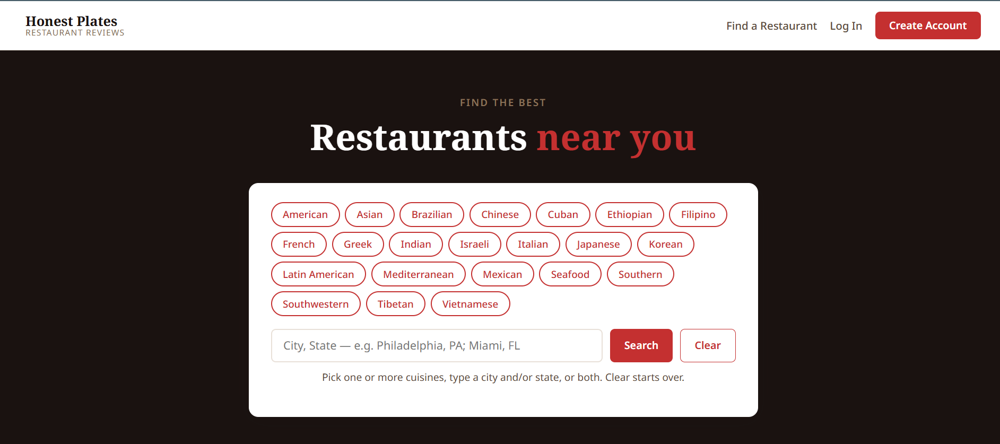
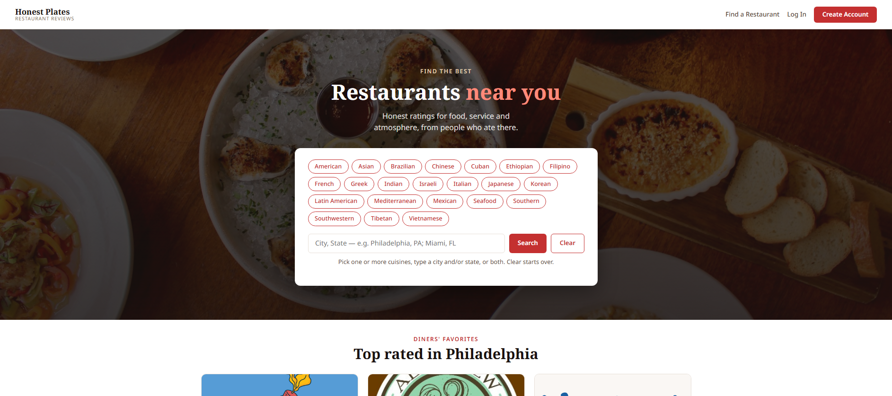

Projects

CIS-3342Honest Plates
A restaurant review web application built with ASP.NET Web Forms and SQL Server. Search restaurants by cuisine and city, browse profiles, and rate reviews.

CIS-3342Honest Plates v2
Honest Plates grown into a multi-user app: reviewer and restaurant representative accounts, restaurant profiles with photo galleries, reviews with photos and rep responses, and reservations with email notifications. Every database call uses a stored procedure.